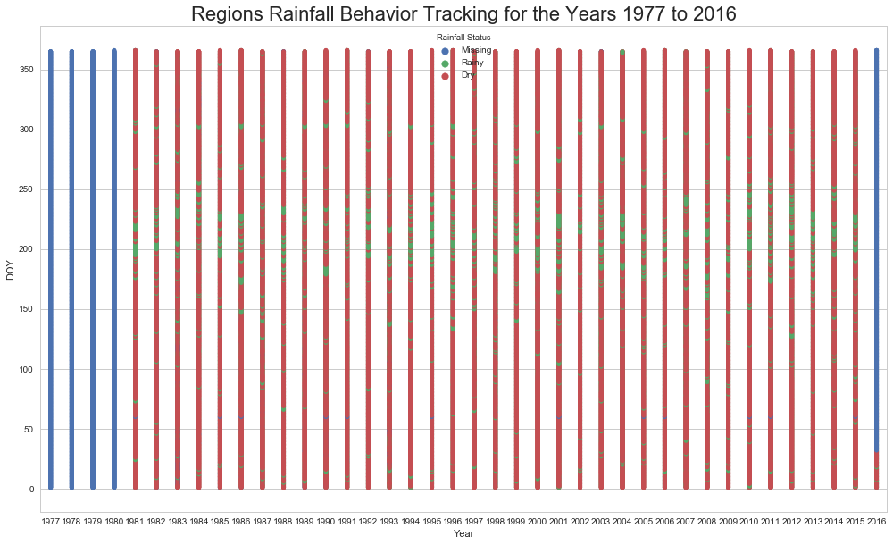

Entry 6¶
Rainfall Status Tracking Graph¶
John Lunalo
Rainfall Status Tracking Graphs
Crop modelling and agricultural experimental designs entails range of activities among them is to work with climatic data to inform farmers on better and modernized scientific agricultural practices. This can be less achieved without a tool for data analytics. Working with data is becoming rarely uncommon in Agriculture as it drives every informed decision making. To contribute towards enriching farmers with better insightful tools, I design a set of graphs among them being Rainfall Tracking Graphs that can aid farmers visualize huge climatic data. The graph is done after a series of data manipulation.
I have used threshold of 0.8 millimeters to indicate a rainy day and anything less than that but not missing to indicate dry day. Key parameters include Day of the year that is extracted from the dates, Rainfall Status that is recoded into three categories (rainy, dry and missing) and year which is plotted on the x-axis. So, the rainfall is tacked across may years and days. This graph can be used by farmers to predict start of rain so that they know when to start preparing land for planting. The graph can also be scaled up and redesigned to visualize other elements of climate.
This graph can also be implemented together in an application that only request for data in a certain format and takes care of plotting for the user. The app can then be structured to allow interactive functionality which can automate setting of thresholds for different elements, selection of climatic elements e.g. Temperature and Humidity and sub-setting data to only visualize a set of years of interest. Different themes can also be defined to provide a user with a variety
to select from depending on preference or the period of the day. I have made use of python libraries such as pandas to manipulate my data and Matplotlib and Seaborn to facilitate plotting
Code and data: 1